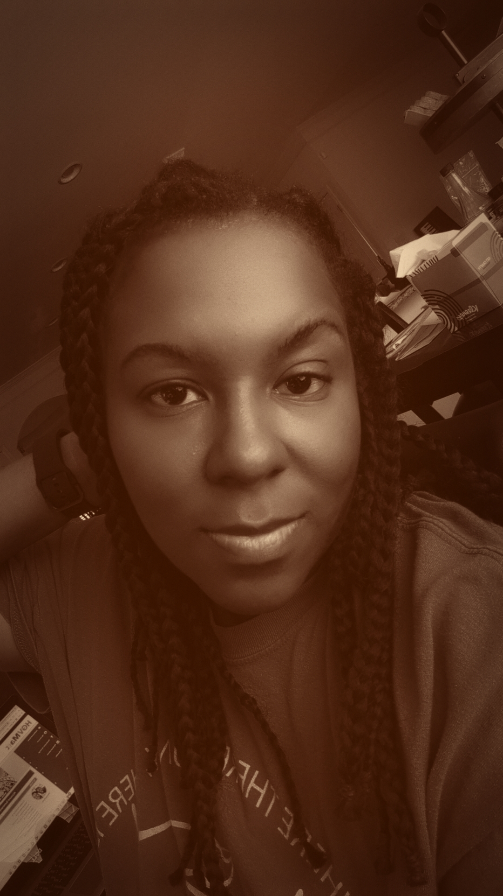

Genika Mortimer | Web Developer

Hobbies
Contact
Summary
Dedicated and versatile Technical Professional with a strong foundation in web development and content
management. Proficient in a wide range of programming languages and software applications, with hands-on
experience in HTML, CSS, JavaScript, and Adobe Experience Manager (AEM). Adept at crafting seamless user
experiences and delivering top-notch technical support for both web and hardware-related issues. Known for
collaborative problem-solving, project management, and a commitment to excellence. Seeking opportunities to
leverage my skills and expertise to drive innovation and success in a dynamic tech environment.
Education
- Bachelor of Business Administration (B.B.A.)
- Management Information Systems
- University of West Georgia, Carrollton, GA
Work Experience
Web Content Specialist | MasTech Digital (Verizon) | September 2021 ‐ Present
- Develop new websites from scratch and maintain existing sites using Adobe Experience Manager (AEM).
- Collaborate with multiple department heads to implement changes and updates within tight deadlines.
- Edit and update technical content to enhance customer and employee experience through personalized support
content.
- Implement strong content architecture for AI/Bot strategy and scalability, reducing content duplication and
improving SEO.
- Ensure consistent and up-to-date performance support content across all channels.
Technical Support Specialist | Kelly Services (Apple Tech Support) | December 2019 ‐ August 2021 (Remote)
- Provided technical assistance and troubleshooting support for various Apple devices through customer calls.
- Assisted customers in setting up and resolving issues with iMacs, iPhones, AirPods, and other Apple products.
- Utilized proprietary tools and Microsoft Teams to deliver efficient customer support
Skills
- Languages: HTML, CSS, JavaScript, Bootstrap, JQuery, SQL
- Software: Google Suite, Microsoft Office, Illustrator, Dreamweaver, Photoshop
- Content Management Systems: Adobe Experience Manager (AEM), Joomla, Pagebuilder, Documentum,
WebSphere, SharePoint
- Hardware: Hardware installation, hardware troubleshooting, memory, network adaptors, video cards,
device drivers
- Operating Systems: Windows 10, MacOS